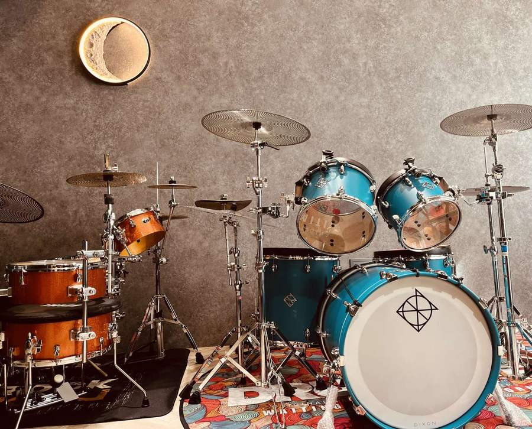

住板橋公寓也能練鼓嗎？三樣東西佈置孩子的家庭練習角
板橋很多家庭住在公寓或大樓。孩子開始學爵士鼓，您可能先擔心放不下鼓，也怕吵到鄰居。在家練，不一定要一整套鼓。請留一個固定的小角落，再準備打點板、實體喇叭和一支手機。
一個固定的角落
請選一個孩子每天都會經過的地方，客廳沙發旁或書桌邊都可以。用具就收在那裡，不要今天放在客廳、明天換到房間。看得到、拿得到，孩子比較容易自己動手。
第一樣：手跟腳的打點板
家裡若放得下一套鼓，練起來會比較接近上課。空間或音量不夠的話，就準備手跟腳的打點板。敲下去要有回彈、有回饋，手腳才練得接近真的打鼓。要買哪一種，可先與老師確認。
第二樣：實體喇叭
跟著音樂練的時候，請用實體喇叭播放，不要只靠手機喇叭。手機播不出低頻，大鼓和 Bass 的拍子就抓不準。
第三樣：一支手機
手機做兩件事。練之前，請打開班群裡老師傳的示範影片，讓孩子對照看；練完，每週錄大約 1 分鐘傳給老師。老師上完課，會在班群放影片示範、口訣、動態譜、靜態譜或音檔。
三個原則
爸媽不用懂樂理，也不用當嚴格糾錯的評審——你只需要當孩子「最捧場的聽眾兼專屬攝影師」！練習前陪他點開班群裡老師傳的示範影片，練完幫他拍支 1 分鐘影片傳給老師，剩下的專業調整交給我們就好。
想到教室打真鼓
慕尼克音樂板橋校區有獨立隔音鼓房與三組真鼓團班教室（五人滿班），上課打的是真的爵士鼓。在家用打點板把手腳的順序練熟，到教室再把力道和音色打出來。課怎麼上，請看板橋爵士鼓課。

家長常見問題
住公寓沒辦法放鼓，可以學爵士鼓嗎？
可以。在家用手跟腳的打點板練習，到教室的獨立隔音鼓房與三組真鼓團班教室（五人滿班）打真鼓。
練鼓放音樂用手機可以嗎？
播放音樂請用實體喇叭，因為手機喇叭播不出低頻。手機留著對照示範，以及錄練習影片。
錄影要多久傳給老師一次？
請每週錄一次，大約 1 分鐘。老師看過影片，才知道下一步要練什麼。